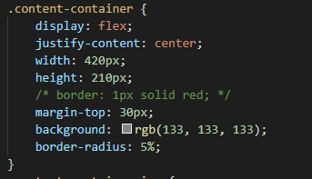

As can be seen, the boxes are now a solid color.
I've removed the gradient from the navbar as well. They were also #AFAFAF.

Interesting, right? The contrast between black and white
causes our eyes to try to compensate for the difference and
as result, our eyes become "confused".
This next illusion is a display of how the rotating square appears to be increasing in size as it rotates,
while in fact it's staying the same size the entire time.
This is done by hiding it's corners when they are parallel to the boxes hiding them.